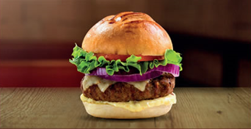
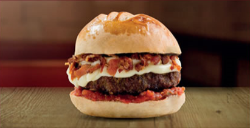
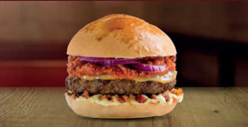
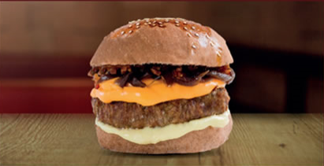

Primeiro Miniprojeto
Cardápio Hamburgueria
TUBA

Hambúrguer R$ 22,90 - Combo R$ 32,90
Ingredientes:
- Pão da casa
- Maioneses de bacon
- Hambúrguer de 190g
- Queijo Muçarela
- Cebola Roxa
- Alface
- Tomate
LE PINGUÊ

Hambúrguer R$ 22,90 - Combo R$ 32,90
Ingredientes:
- Pão da casa
- Molho de tomate
- Hambúrguer de 190g
- Queijo Muçarela
- Chimichurri
O chimichurri é um molho tradicional na Argentina e no Uruguai, usado principalmente para fazer churrascos.
CATUPIRY COM BACON

Hambúrguer R$ 22,90 - Combo R$ 32,90
Ingredientes:
- Pão da casa
- Molho de tomate
- Catupiry
- Bacon crocante
COSTELA

Hambúrguer R$ 22,90 - Combo R$ 32,90
Ingredientes:
- Pão da casa
- Maioneses da casa
- Hambúrguer de 190g de costela
- Queijo Provolone
- Cebola Roxa
- Molho Barbacue
CHEDDAR

Hambúrguer R$ 22,90 - Combo R$ 32,90
Ingredientes:
- Pão Australiano
- Maioneses da casa
- Hambúrguer de 190g
- Queijo Cheddar
- Cebola caramelizada
- Bacon crocante
QUATRO QUEIJOS

Hambúrguer R$ 22,90 - Combo R$ 32,90
Ingredientes:
- Pão da casa
- Molho de tomate
- Hambúrguer de 190g
- Provolone
- Catupiry
- Gorgonzola